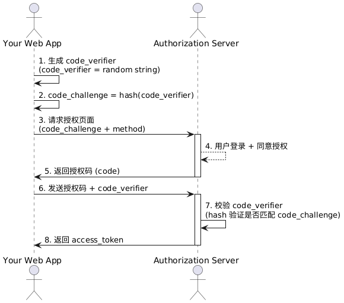

什么是 PKCE
Posted on Thu 24 April 2025 in Journal
| Abstract | 什么是 PKCE |
|---|---|
| Authors | Walter Fan |
| Category | learning note |
| Status | v1.0 |
| Updated | 2025-04-24 |
| License | CC-BY-NC-ND 4.0 |
什么是 PKCE？
PKCE（Proof Key for Code Exchange by OAuth Public Clients）是 OAuth 2.0 的一个安全扩展， 最初是为了移动端、单页应用（SPA）这类公有客户端（Public Clients）设计的。
公有客户端特点： - 无法安全保存密钥（比如手机 APP，网页 JS 代码，用户可以轻松拿到源码） - 没有“客户端密钥（client_secret）”这个武器来自我保护
PKCE 的目的就是：
在“授权码”流程中，防止授权码被窃取后冒充客户端使用。
问题背景
传统 OAuth 授权码流程（Authorization Code Flow）里，客户端拿到一个 code，然后去换 access_token。
但问题是：如果有黑客拦截了 code，也能自己去换 token，冒充合法用户！
PKCE 怎么解决？
简单说：
在请求授权码时，先留一个暗号（code_challenge）；拿授权码换令牌时，要出示暗号的原文（code_verifier）验证身份。
直观例子
假设你是个移动端 APP，要登录 OAuth 提供商（比如 GitHub 登录）。
你做了两件事：
1. 自己生成一个随机字符串，叫 code_verifier。（非常随机，没人知道）
2. 把 code_verifier 做个 hash（比如 SHA-256）处理，得到 code_challenge。
然后：
- 请求授权时，带上 code_challenge。
- 拿到授权码后，带着原版 code_verifier去换 access_token。
服务器检查：
- 收到你的 code_verifier。
- 自己 hash 一下，看跟最开始收到的 code_challenge是否一致。
- 一致才给你换 access_token！
这样，即使授权码被别人截获，没有 code_verifier，也换不到 token！
PKCE 流程时序图

@startuml
actor "Your Web App" as Client
actor "Authorization Server" as Server
Client -> Client: 1. 生成 code_verifier\n(code_verifier = random string)
Client -> Client: 2. code_challenge = hash(code_verifier)
Client -> Server: 3. 请求授权页面\n(code_challenge + method)
activate Server
Server --> Server: 4. 用户登录 + 同意授权
Server -> Client: 5. 返回授权码 (code)
deactivate Server
Client -> Server: 6. 发送授权码 + code_verifier
activate Server
Server -> Server: 7. 校验 code_verifier\n(hash 验证是否匹配 code_challenge)
Server -> Client: 8. 返回 access_token
deactivate Server
@enduml
代码实例（伪代码）
Talk is cheap, show me the code.
# 1. 生成 code_verifier (随机字符串)
code_verifier = generate_random_string()
# 2. 生成 code_challenge (SHA256 再 base64-url-encode)
code_challenge = base64url_encode(sha256(code_verifier))
# 3. 用户跳转到授权页面
authorization_url = (
"https://auth-server.com/authorize?"
"response_type=code"
"&client_id=YOUR_CLIENT_ID"
"&redirect_uri=YOUR_CALLBACK_URL"
f"&code_challenge={code_challenge}"
"&code_challenge_method=S256"
)
# 4. 用户授权后拿到授权码 code
# 5. 换 token，带上 code_verifier
token_request_payload = {
"grant_type": "authorization_code",
"code": received_code,
"redirect_uri": "YOUR_CALLBACK_URL",
"client_id": "YOUR_CLIENT_ID",
"code_verifier": code_verifier
}
response = post("https://auth-server.com/token", data=token_request_payload)
access_token = response["access_token"]
简单总结
| 步骤 | 关键点 |
|---|---|
| 请求授权码时 | 带上加密的暗号（code_challenge） |
| 换取 token 时 | 出示原暗号（code_verifier） |
| 服务器检查 | 是否对得上 |
本作品采用知识共享署名-非商业性使用-禁止演绎 4.0 国际许可协议进行许可。